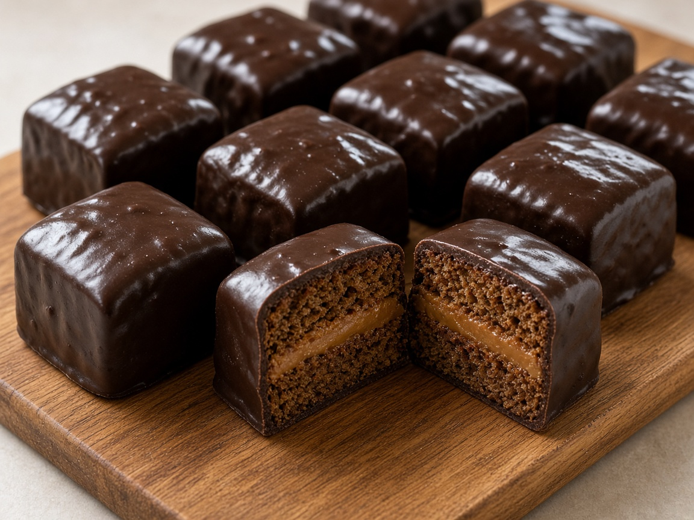
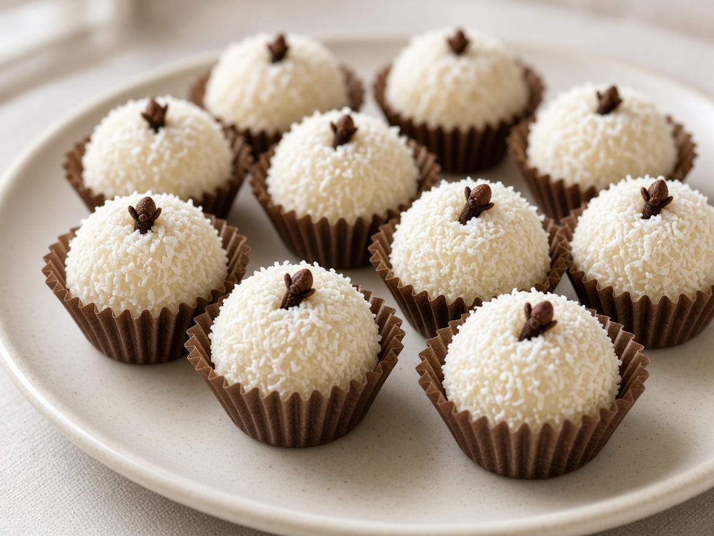

Doce · festa
Brigadeiro
Condensed milk, cocoa, and butter cooked until glossy, then rolled in granulado. Brigadeiros can also come in many other flavors. Named after Brigadeiro Eduardo Gomes, it became Brazil’s birthday cake in bite form.
Doces & salgados do Brasil
Brigadeiro at birthday tables. Pão de queijo still steaming. Coxinha that never makes it to the second tray. This is the Brazil that lives in kitchens, padarias, and late-night cravings.

The menu
Filter the tray. Every name is Portuguese on purpose — that’s how they show up on real menus.
Doce · festa
Condensed milk, cocoa, and butter cooked until glossy, then rolled in granulado. Brigadeiros can also come in many other flavors. Named after Brigadeiro Eduardo Gomes, it became Brazil’s birthday cake in bite form.

Doce · spice
A honey-spice cake dunked in chocolate, closer to a Brazilian gingerbread than a loaf, and filled with dulce de leche. Soft crumb, clove and cinnamon, and a snap of couverture on the outside.

Salgado · boteco
Creamy shredded chicken tucked into dough shaped like a little drumstick (a coxinha de galinha), breaded and fried until the crust shatters. The salgado that empties first.

Salgado · Minas
Cassava starch and cheese baked into chewy, hollow rolls. Gluten free by tradition, not by trend — a Minas Gerais breakfast that now lives in every Brazilian airport.

Doce · coco
Brigadeiro’s coconut cousin: condensed milk and coco ralado, rolled in more coconut, finished with a clove. The name means little kiss.
A cozinha, not a trend
Brazilian food is regional, loud, and generous. Minas cheeses, Bahia’s Afro-Brazilian sweets, São Paulo bakeries, Rio botecos. Treats sit at the center of that map because they travel well: a paper box of brigadeiros, a warm bag of pão de queijo, a coxinha eaten standing up.
Brigadeiros & Co exists to put those names in lights — spelled right, plated with respect, and explained for anyone who has only met Brazil through barbecue.
How Brazilians serve them
Drops, not a daily menu
Brigadeiros & Co trays are cooked in batches. Some weeks there is a full festa box; some weeks there isn’t. Join the list and we’ll email you when something is coming — so you can order before it disappears.